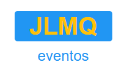
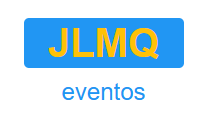
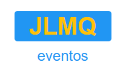
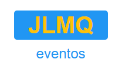

.jpg) 



Soy Jose Luis Mamani Quispe, un apasionado multi-técnico con 3 años de experiencia en la industria de alimentos, gastronomía, sistemas informáticos e inglés. Mi enfoque se centra en diseñar soluciones visuales atractivas y funcionales que conecten con el público objetivo. Destaco por mi ascenso al puesto de sub-chef en el prestigioso Restaurante Mar y Tierra, donde adquirí una profunda comprensión de la gastronomía y la gestión de calidad. Mi pasión por la innovación y el diseño me impulsa a ofrecer soluciones creativas y cautivadoras. Combino una estética visual cautivadora con una experiencia de usuario intuitiva. Mi objetivo es transmitir mensajes efectivos y lograr resultados impactantes en cada proyecto. Estoy emocionado por enfrentar nuevos desafíos en las áreas de alimentos, gastronomía, sistemas informáticos e inglés. Si deseas conocer más sobre mi trabajo o explorar colaboraciones, ¡me encantaría conectarme contigo! Explora mi portafolio para ver ejemplos de mis habilidades y proyectos anteriores. Espero tener la oportunidad de trabajar juntos y superar tus expectativas.
Aquí puedes encontrar una selección de mis proyectos más destacados:
Si deseas comunicarte conmigo, puedes hacerlo a través de los siguientes medios: